App of the Month Winners

| HitTheDot! by Nicolas Proske |
Alphabets for Kids by Manan Jindal |
Rescue Animal Helpline by Ashnidh Khandelwal |
Fast Chat by Danish Hakim |
| 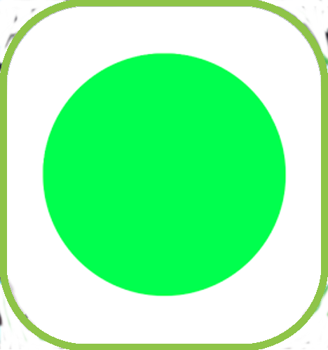 | |||
| Hailing from Germany, Nico spends his time snowboarding and biking. He enjoys gaming, and his app is a simple, clean, entertaining game. | 11-year-old Manan from India created this app for small children to learn the alphabet. Computers are his passion, and he recently has moved from just playing games to creating new games of his own. | Ashnidh, a student in India, loves coding, and created this app to help him advance his programming skills. He loves dance and gymnastics. His app identifies animal rescue shelters along with their contact information. | Danish, a student from Malaysia, created this app to explore usage of FirebaseDB. His app allows users to create accounts, add friends, and chat privately with each other. |
| Soccer Autoplay by Teddy Brask |
Barrel Organ by J.M.Beltrán Urcelay |
Binary Converter by PixiiBomb |
Niss War Angel (天使軍團) by SZY |
| 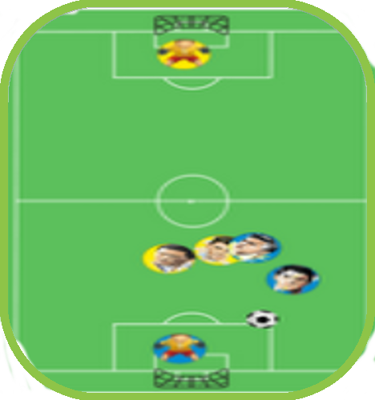 |  |
||
| A teacher from Denmark, Teddy created this app for his middle school students as part of his teaching material. His soccer "game" is entirely automated, and the user needs to change properties within the app to create better or worse players. | JM is a retired teacher from Spain, who felt nostalgic about old musical instruments. He made this app to enable easy creation of simple songs. | Nicholette Liguori, better known as PixiiBomb, is an avid gamer, app developer, artist, designer, singer, cosplayer, and more. She created this app to help a fellow classmate with his own programming troubles. | SZY is a teacher who found that his students loved strategy puzzle games. He developed this standalone tower defense game for his daughter. |

| 3 Steps by Hy Nguyen |
Mood Mediator by Annika Huprikar |
Under My Wing by Girls Who Code Club GHS |
Duel of Pixels by Braden Inman |
 |
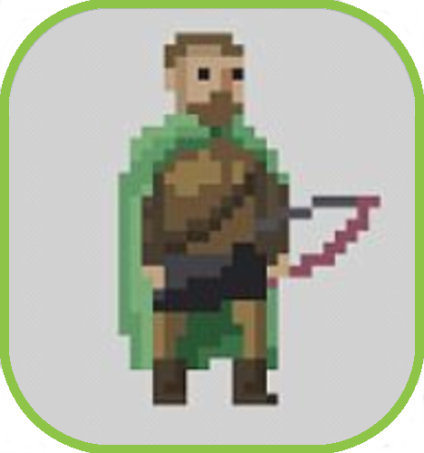 | ||
| Hy, a high school student, created 3 Steps to challenge his programming skills and cultivate his interest in video game development. His simple, elegant math-based game features unlockable collectibles as rewards. | A rising sophomore at Deerfield High School, Annika is deeply involved in school activities, clubs, and sports. She created Mood Mediator for teenagers to be able to seek support, advice, and counseling confidentially. | Cassandra Marcussen, Michelle Woo, Melissa Woo, Julia Marcussen, Nithya Shenoy, Ruya Maredia, Isabella Harrison, Mira Lukazik, Miriam Ojjeh, and Natalie Ito developed this app as a resource for victims of abuse. | A freshman studying Computer Science at Boise State University, Braden studied App Inventor in high school and loves anything science or tech related. His app, Duel of Pixels, is a turn-based fighting game featuring character creation, level selection, currency, and upgrades. |


| Youth Winner | Adult Winner | ||
| Save Water Save Lives by Soham Joshi |
NiMa by George Vakalis |
||
| 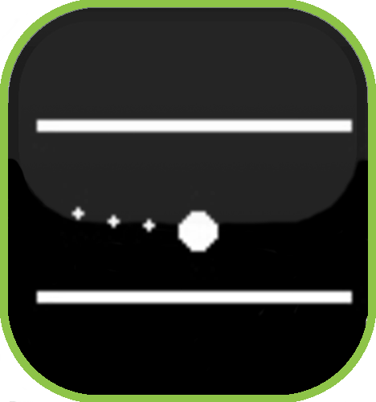 | |||
| Seventh grader Soham is passionate about math, science, and technology. His SWSL app educates people about the global water crisis and encourages them to save water in their everyday lives. | Multi-time winner George from Greece got hooked on App Inventor by his child. He enjoys making simple fun apps, like Nima, where the player has to stay between the lines avoiding touching them or cross them for as long as he can. |
| Truth or Dare by Jacob Palacios, Sean Mcquerrey, Logan La barge |
| 7th Graders Jacob, Sean, and Logan made the traditional schoolyard game digital and mobile for their school project. |
| World Radio V1.0 by Victor Positan |
Inverse & Cramer's Calculator by Rini Hafzah Binti Abdul Rahim |
Resistor Color Code by Soha Odahn |
Playbook by Gale Fulton |
 |
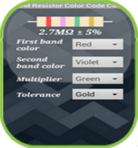 | ||
| Romanian-Canadian Victor made his radio app to reflect his passion for music. Victor used to play music in clubs and events; his stage name is DJ Buddy Vic. | Rini, a lecturer from Malaysia made an app to help her students solve simultaneous linear equations by using the Inverse Method and Cramer’s Rule. | Palestinian IT teacher Soha made her Resistor Color Code app for 2 reasons - to show her students that App Inventor is fun and practical, and to provide her students with an app in their hands to calculate the value of the resistors. | Gale Fulton's first attempt at writing an app worked out well. His love of sports led him to make his own football video game app. Sharing it with others, he realized he was on to something! |
| Youth Winner | Adult Winner | ||
| All in One Vocal School Assistant by Khalid Abdalla |
CobU by Dimitrios Chatzifoteinos |
||
| 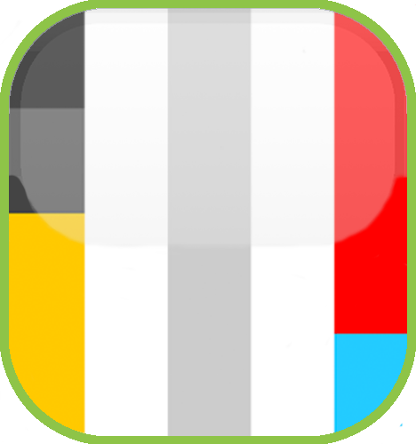 | |||
| Austrian 9th grader Khalid's first time programming proved successful with his all-in-one app to help students stay organized at school. | Dimitrios, a lawyer from Greece, made this calculator app with blind and visually impaired people in mind. The user interface is specially designed for ease of use. |
| Youth Winner | Adult Winner | ||
| Slider Game by Amogh Chaturvedi |
Veterans in Crisis by Jeanmarie Lerner |
||
| 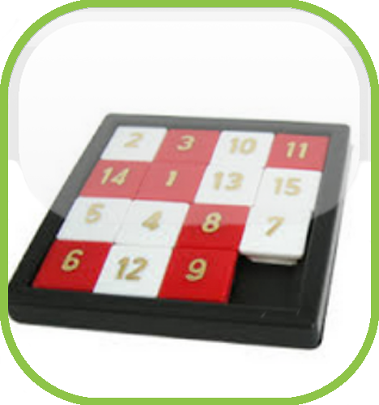 | |||
| 11 year old Amogh loves logic games and wants to inspire others to love them as well. His Slider Game app is a well-executed version of the classic tile swap puzzle game. | Self-described old coot and retired Army pilot Jeanmarie Lerner created Veterans in Crisis to connect veterans in need with the resources that are available to them, using location services on their phone or tablet. |
| Dice by Anson Savage and Tyson Seable |
Spell Bind by Param Thakkar |
Pictionary 2.0 by Cameron Mitchell & Jacob Michalski |
Grand Quiz by GK Rahul Khanna |
| 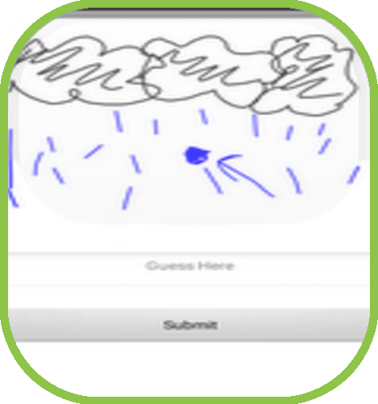 | |||
| Two cousins who "love being nerds and programming apps", Anson and Tyson have made a simple but elegant dice app. Choose how many dice you want and roll away! | Canadian 7th grader Param created Spell Bind, a very helpful companion for studying spelling. The app says words out loud and you get to spell them. It tests you, tracks your score, and also has a "Learn" feature. | A team of hardworking students from New York who love technology with a passion created a Pictionary play and pass app. Test your drawing skills with your friends! | 15 year old Rahul created Grand Quiz as a resource for Indian students to prepare for national exams. The quizzes test general knowledge, so they are useful for anyone in the world! |
| Memorama by Rodolfo Diaz |
Black and White by George Vakalis |
Speak and Spell by Luke Aaron |
EmergencyAlert_SMS by Ashok Verma |
| 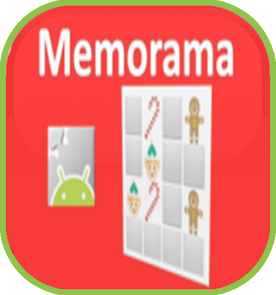 | 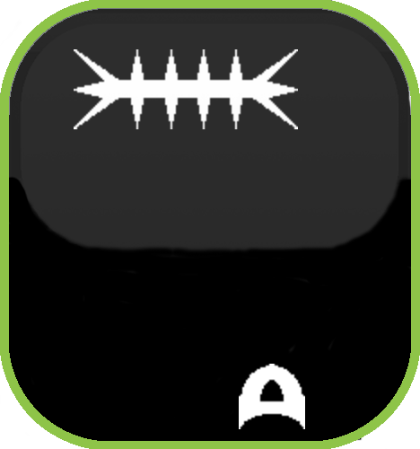 | 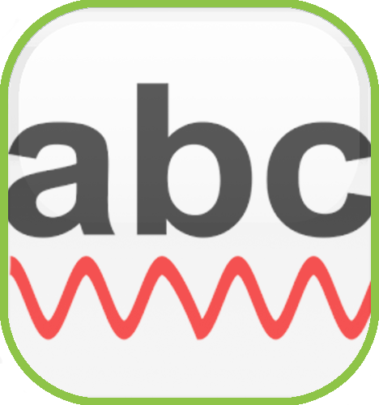 | |
| App Inventor enthusiast Rodolfo, from Mexico, made this memory game with a Christmas theme. Match the tiles to win the game! | George, who loves his job teaching Computer Science in Greece, made his own game where the user must avoid spikes to gain points. Not easy, but fun to play! | Speak and Spell is the perfect app for anyone who struggles with spelling certain words or is dyslexic. Luke from the UK made this app to check spelling and definitions of spoken or typed words. | Retiree Ashok created his app to help victims of crime who are unable to communicate about her/his plight. Just pressing or button or shaking the phone prompts the app to send texts with GPS location information automatically to 3 contacts. |
| Study Punch by Ula Kanduc |
AQ Alarm Clock by Federico Alessandrello |
Music Transposer by Brian Song |
Biblo Banfi by Riccardo Stucchi, Leonardo Ferrentino, Davide Bonalume. |
| 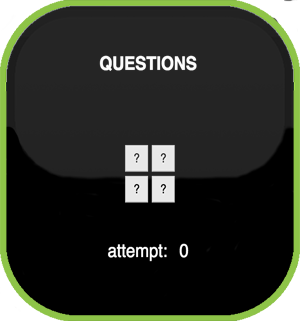 | 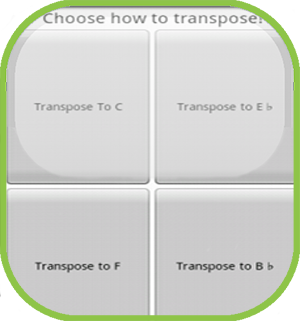 | ||
| Ula, from Austria, created StudyPunch, to help students feel more involved in their learning process. Her app features German grammar questions that provide the knockout punch for test prep! | Another student from Austria, Federico, wants to create something revolutionary. He is off to a good start with his alarm clock app that requires the user answer questions before it shuts off the alarm. | Saxophone player and app coder Brian from South Korea, decided to mix his two passions by creating a useful app to help him transpose notes for playing music. | Three Italian students teamed up to make this comprehensive app to digitize their local library. The app allows catalog access and book checkout, all from your phone or tablet! |
| Tome Nota by Emerson Capuchi Romaneli |
Calculator by Jörg Kowalski |
Animales Animals by María Dolores Masó and Angel Martínez |
Floppy Bubble by Bulat Manasse |
| 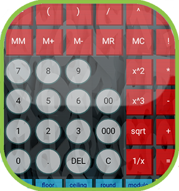 | 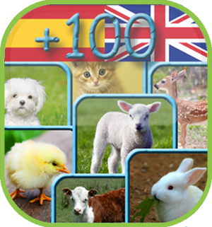 | ||
| Brazilian Computer Science student Emerson made this excellent note taking app as an example for a mini-course he is teaching on App Inventor. | This Calculator app was created by German cardiologist Jörg, who brushed up on his old coding skills to create this comphrehensive app. | Spanish couple María and Angel leapt into coding with this fun app to teach their two young daughters some Spanish/English vocabulary. Every child loves animals, so that's the theme of this extensive app. | Floppy Bubble is another first foray into mobile app development by Bulat, from Romania. He decided to experiment with App Inventor and created this highly addictive game. |

 |
 |
 |
 |
| Alpha Forge by Mihir Tomar |
Manuel María by Alberto Suárez |
Pocket Processing by Abdur-Rahmaan Janhangeer |
CNHSS by Raveesh P |
| 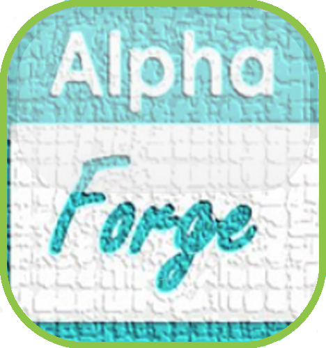 | 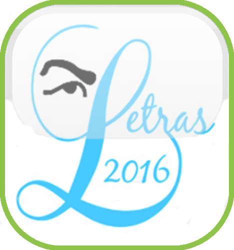 | ||
| Mihir, a 14 year old Indian student, created Alpha Forge, to keep groups connected while travelling. You can see all of your groupmates’ locations on a map, chat with them, raise an emergency alarm if you are in danger, find your groupmate if he is lost and much more. | 16 year old Spanish student Alberto made his app, Manuel María, to celebrate the Día das Letras Galegas( Day of the Galician Literature), in recognition of the author's poems and contributions. | Pocket Processing allows users to build their own simple animations by writing and testing JavaScript code right in the app. It was chosen as most innovative because of its unique concept—an app that allows users themselves to code and be creative! | CNHSS was created by a 13-year-old student at the Christ Nagar Higher Secondary School (CNHSS) in India, in order to offer their classmates a multi-purpose app to facilitate many aspects of their everyday lives. The app offers information about the school, including bus routes and the school pledge, as well as useful functionalities, such as a link to an online payment service for term fees, and the ability to input and save timetable information. |
|
|
|
|
| Gilfredo by Ricardo Merces |
Symmetrix by Necmettin |
Cloq by Brian Hameister |
Fin by Armando Cavanha F. |
| 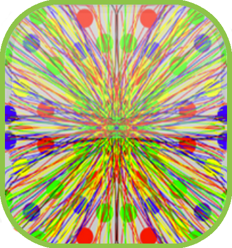 | 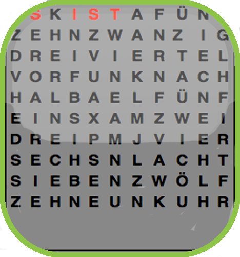 | 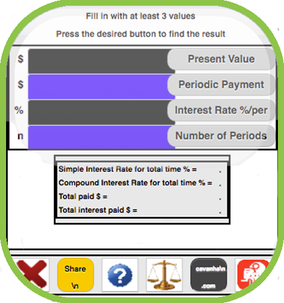 | |
| In Gilfredo, the chicken has to move quickly to avoid the hatchet! Ricardo, a coding teacher from Brazil, made this fun app. | Necmettin, from Turkey, created a simple but fun app that takes the Paint Pot app to a new level with mirroring in all 4 quadrants. | Brian, from Germany, got his inspiration for Cloq from his daughter. She saw this clock on the internet so Brian decided to see if he could make it using App Inventor. | Fin is an all-in-one calculator for Interest Rate, Present Value, Periodic Payment and Number of Payments, created by Armando, a Brazilian engineer. |
| Youth Winner | Adult Winner | ||
| Math4Kids by Arnav Sethi |
¿Que llevo yo? by Gerard Fossoul Soler |
||
| 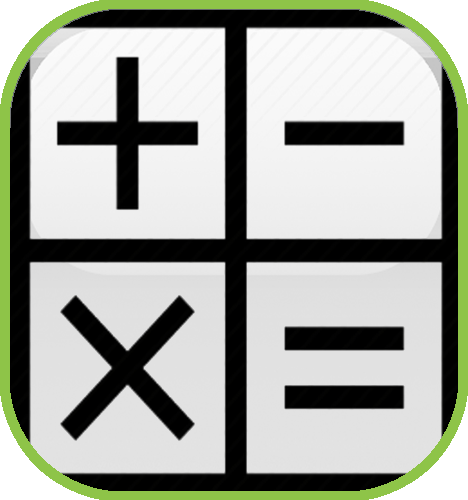 | 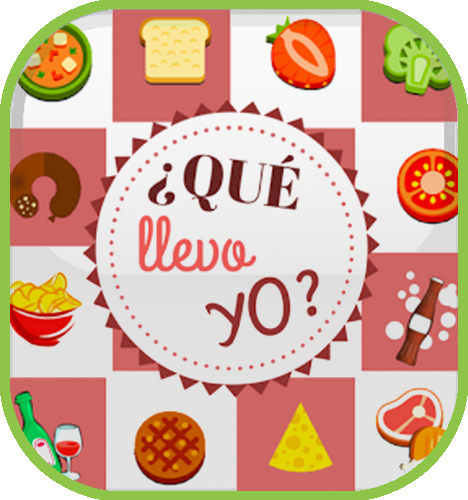 | ||
| 14 year old Arnav from India created a math app to test kids arithmetic skills. He built he app to help out the NGO where his mother works. | Planning a meal with family and friends? Spanish developer Gerard's comprehensive app makes the task easy and organized! |
| FlappyBird by Necmettin |
Tiny Songs Data Base by Gopi Krishna |
iParrot by Sahil and Saabir Sadik |
AutoResponder by Pradeep Pasula |
| 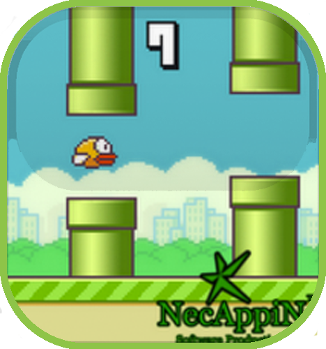 | |||
| Necmettin, a past App of the Month winner, does it again with his excellent recreation of a classic game app. | Gopi, whose ambition is to become a professional app designer, created a neat little app that plays a selection of his favorite songs. | 15 year old twin brothers, Sahil and Saabir, collaborate on their expansive app that puts all your communication apps at your fingertips. | Pradeep, from India, a student majoring in electronics and communications engineering, created an auto reponse app with multiple and customizable messages. |
| FuncGraph by Christian Caicedo |
Tu Voz by León Bátiz |
Cam Maker by Miguel Esteban Lineros |
ClickListenCall by Ashok Verma |
| 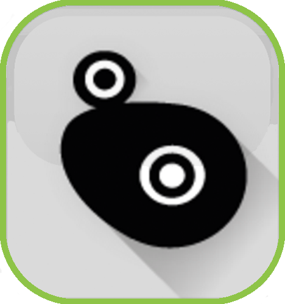 | 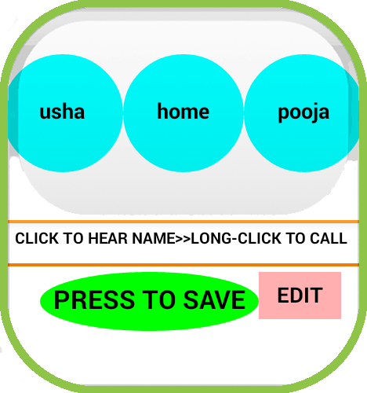 | ||
| IT student Christian from Ecuador has a future in app development. His app beautifully graphs many math and trig functions for viewing and analyzing. | León's app, Tu Voz allows hearing impaired and deaf people to communicate with a simple and useful interface. León, an artist from Mexico, wants to contribute to improve communication and avoid discrimination. | Cam Maker allows the user to calculate and represent rotating planar cams with linear follower mechanisms. Inventor Miguel, a Spanish Industrial Engineering student, has developed a new passion for app devlepment with this project. | Ashok, a retired government worker in India, took up programming in his newfound spare time. His app makes calling friends on the phone as easy as a single click! |
 |
|||
| Tower of Hanoi by Khoi Nguyen Tran Minh |
Arm Builder by Anthony Giansante |
Cybersecurity Maze by Kathleen Falcon |
Smurf Guess Obj by Chiccovision |
 |
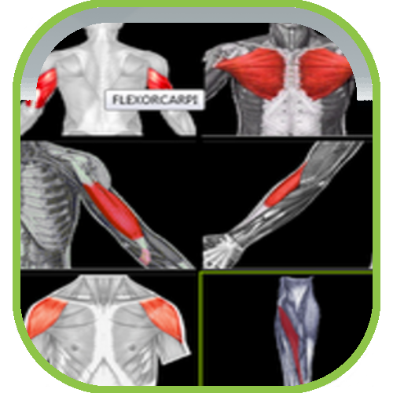 | ||
| Khoi, one of the MIT App Inventor Master Trainers from Vietnam, recreated the famous Tower of Hanoi puzzle with his app. | Anthony, a Canadian coding enthusiast, created this arm-focused workout app for the obsessive compulsive. | In this app, the hero sprite, Android, is guided through a series of mazes that also teach about cyber security. It was made by Kathleen, a Computer Science student from New Jersey | Italian cook, known as Chiccovision, recreated a fun recall game. Guess which object appears in the scene and score points. |


 |
 |
 |
 |
| 3 Apps In 1 by Oscar Medina |
Wijnmaker by Luc Volders |
Secure Writing by Giulio Broghammer |
iTara by Danny M |
 |
|||
| Three Apps In One is a wonderfully designed app that has a timer, a magic number generator, and a color game! It was created by Oscar Medina, an affiliate marketer from the United States. | With Wijnmaker, you can calculate the sugar, acid, and alcohol content of the wine you make! This app was created by Luc Volders from the Netherlands! | Secure Writing is an app that translates your messages into a secret code that only you and your friends understand. It was developed by Giulio Broghammer, a 17 year-old student from Germany! | Our Inventor of the Month is Danny M, a teen who built his own voice assistant, iTara! Tara can tell you the weather and the time, and she even knows the word of the day! |


 |
| Stock Portfolio by Andrew Fitzsimmons |
| Our inventor of the month is Andrew Fitzsimmons! He's an 18-year-old high school student who built his own stock portfolio app to pursue his interest in investment! |